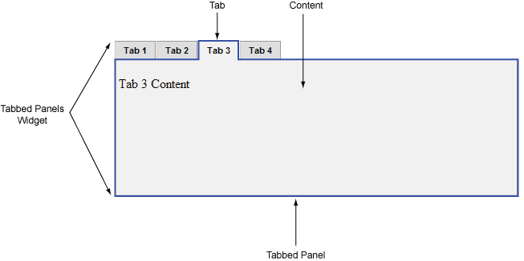

A version of this file is available on Adobe LiveDocs. Please check it for comments and updates.
A Tabbed Panels widget is a set of panels that can store content in a compact space. Site viewers hide or reveal the content stored in the Tabbed Panels by clicking the tab of the panel they want to access. The panels of the widget open accordingly as the visitor clicks different tabs. In a Tabbed Panels widget, only one content panel is open at a given time. The following example shows a Tabbed Panels widget, with the third panel open.
The HTML code for the Tabbed Panels widget is made up of an outer div tag that contains all of the panels, a list for the tabs, a div tag to contain the content panels, and a div tag for each content panel. The HTML code for the Tabbed Panels widget also includes script tags in the head of the document and after the Tabbed Panel widget’s HTML code.
The script tag in the head of the document defines all of the JavaScript functions related to the Tabbed Panel widget. The script tag after the Tabbed Panel widget code creates a JavaScript object that makes the Tabbed Panel interactive. Following is the HTML code for a Tabbed Panel widget:
<head>
. . .
<!--Link the CSS style sheet that styles the tabbed panel-->
<link href="SpryAssets/SpryTabbedPanels.css" rel="stylesheet" type="text/css" />
<!--Link the Spry TabbedPanels JavaScript library-->
<script src="SpryAssets/SpryTabbedPanels.js" type="text/javascript"></script>
</head>
<body>
<!--Create the Tabbed Panel widget and assign classes to each element-->
<div class="TabbedPanels" id="TabbedPanels1">
<ul class="TabbedPanelsTabGroup">
<li class="TabbedPanelsTab">Tab 1</li>
<li class="TabbedPanelsTab">Tab 2</li>
<li class="TabbedPanelsTab">Tab 3</li>
<li class="TabbedPanelsTab">Tab 4</li>
</ul>
<div class="TabbedPanelsContentGroup">
<div class="TabbedPanelsContent">Tab 1 Content</div>
<div class="TabbedPanelsContent">Tab 2 Content</div>
<div class="TabbedPanelsContent">Tab 3 Content</div>
<div class="TabbedPanelsContent">Tab 4 Content</div>
</div>
</div>
<!--Initialize the Tabbed Panel widget object-->
<script type="text/javascript">
var TabbedPanels1 = new Spry.Widget.TabbedPanels("TabbedPanels1");
</script>
</body>
In the code, the new JavaScript operator initializes the Tabbed Panel widget object, and transforms the div content with the ID of TabbedPanels1 from static HTML code into an interactive page element. The Spry.Widget.TabbedPanels method is a constructor in the Spry framework that creates Tabbed Panel objects, and the information necessary to initialize the object is contained in the SpryTabbedPanels.js JavaScript library that you linked to in the head of the document.
Each of the elements in the Tabbed Panel widget contains a CSS class. These classes control the style of the Tabbed Panel widget, and exist in the accompanying SpryTabbedPanels.css file.
You can change the appearance of any given part of the Tabbed Panel widget by editing the CSS rule that corresponds to the class names assigned to it in the HTML code. For example, to change the background color of the Tabbed Panel’s tabs, edit the TabbedPanelsTab rule in the SpryTabbedPanels.css file. Keep in mind that changing the CSS code in the SpryTabbedPanels.css file will affect all tabbed panels that are linked to that file.
In addition to the classes shown in the HTML code, the Tabbed Panel widget includes certain default behaviors that are attached to the widget. These behaviors are a built‑in part of the Spry framework, and are in the SpryTabbedPanels.js JavaScript library file. The Tabbed Panel library includes behaviors related to hovering, tab clicking (to open panels), panel focus, and keyboard navigation.
You can change the look of the Tabbed Panel as it relates to these behaviors by editing the appropriate classes in the SpryTabbedPanels.css file. If you want to remove a given behavior, you can delete the CSS rules that correspond to that behavior.
Note: While you can change the look of the Tabbed Panel as it relates to a certain behavior, you cannot alter the built‑in behaviors themselves. For example, Spry still places a TabbedPanelsContentVisible class on the currently open panel, even if no properties are set for the TabbedPanelsContentVisible class in the SpryTabbedPanels.css file.In the preceding example, div tags and list items create a nested tag structure for the widget:
Container <div> Tabs <ul> Tab <li> Content container <div> Content <div>
This 3-level, 5-container structure is essential for the Tabbed Panels widget to work properly; the structure, however, is more important than the actual tags you decide to use. Spry reads the structure (not div tags necessarily) and builds the widget accordingly. As long as the 3-level, 4-container structure is in place, you can use any block-level element to create the widget:
Container <div> Tabs <div> Tab <h3> Content container <div> Content <p>
The div tags in the example are flexible and can contain other block-level elements. A p tag (or any other inline tag), however, cannot contain other block-level elements, so you cannot use it as a container or panel tag for the tabbed panel.
The SpryTabbedPanels.css file contains the rules that style the Tabbed Panels widget. You can edit these rules to style the tabbed panels’ look and feel. The names of the rules in the CSS file correspond directly to the names of the classes specified in the Tabbed Panels widget’s HTML code.
Note: You can replace style-related class names in the SpryTabbedPanels.css file and HTML code with class names of your own. Doing so does not affect the functionality of the widget, as CSS code is not required for widget functionality.The default functionality for the behaviors classes at the end of the style sheet are defined in the SpryTabbedPanels.js JavaScript library file. You can change the default functionality by adding properties and values to the behavior rules in the style sheet.
The following is the CSS code for the SpryTabbedPanels.css file. The first half of the file contains styling rules for horizontal tabbed panels. The second half of the file contains styling rules for vertical tabbed panels.
/* Horizontal Tabbed Panels */
.TabbedPanels {
margin: 0px;
padding: 0px;
clear: both;
width: 100%; /* IE Hack to force proper layout when preceded by a paragraph. (hasLayout Bug)*/
}
.TabbedPanelsTabGroup {
margin: 0px;
padding: 0px;
}
.TabbedPanelsTab {
position: relative;
top: 1px;
float: left;
padding: 4px 10px;
margin: 0px 1px 0px 0px;
font: bold 0.7em sans-serif;
background-color: #DDD;
list-style: none;
border-left: solid 1px #CCC;
border-bottom: solid 1px #999;
border-top: solid 1px #999;
border-right: solid 1px #999;
-moz-user-select: none;
-khtml-user-select: none;
cursor: pointer;
}
.TabbedPanelsTabHover {
background-color: #CCC;
}
.TabbedPanelsTabSelected {
background-color: #EEE;
border-bottom: 1px solid #EEE;
}
.TabbedPanelsTab a {
color: black;
text-decoration: none;
}
.TabbedPanelsContentGroup {
clear: both;
border-left: solid 1px #CCC;
border-bottom: solid 1px #CCC;
border-top: solid 1px #999;
border-right: solid 1px #999;
background-color: #EEE;
}
.TabbedPanelsContent {
padding: 4px;
}
.TabbedPanelsContentVisible {
}
/* Vertical Tabbed Panels */
.VTabbedPanels .TabbedPanelsTabGroup {
float: left;
width: 10em;
height: 20em;
background-color: #EEE;
position: relative;
border-top: solid 1px #999;
border-right: solid 1px #999;
border-left: solid 1px #CCC;
border-bottom: solid 1px #CCC;
}
.VTabbedPanels .TabbedPanelsTab {
float: none;
margin: 0px;
border-top: none;
border-left: none;
border-right: none;
}
.VTabbedPanels .TabbedPanelsTabSelected {
background-color: #EEE;
border-bottom: solid 1px #999;
}
.VTabbedPanels .TabbedPanelsContentGroup {
clear: none;
float: left;
padding: 0px;
width: 30em;
height: 20em;
}
The SpryTabbedPanels.css file contains extensive comments, explaining the code and the purpose for certain rules. For further information, see the comments in the file.
For example, create a folder called SpryAssets in the root folder of your web site, and move the SpryTabbedPanels.js file to it. The SpryTabbedPanels.js file contains all of the information necessary for making the Tabbed Panels widget interactive.
<script src="SpryAssets/SpryTabbedPanels.js" type="text/javascript"></script>
Make sure that the file path to the SpryTabbedPanels.js file is correct. This path varies depending on where you’ve placed the file in your web site.
<link href="SpryAssets/SpryTabbedPanels.css" rel="stylesheet" type="text/css" />
Make sure that the file path to the SpryTabbedPanels.css file is correct. This path varies depending on where you’ve placed the file in your web site.
<div id="TabbedPanels1" class="TabbedPanels"> </div>
<div class="TabbedPanels" id="TabbedPanels1"> <ul class="TabbedPanelsTabGroup"> <li class="TabbedPanelsTab">Tab 1</li> <li class="TabbedPanelsTab">Tab 2</li> <li class="TabbedPanelsTab">Tab 3</li> <li class="TabbedPanelsTab">Tab 4</li> </ul> </div>
The preceding code adds four tabs to the widget. You can add unlimited tabs.
<div class="TabbedPanels" id="TabbedPanels1"> <ul class="TabbedPanelsTabGroup"> <li class="TabbedPanelsTab">Tab 1</li> <li class="TabbedPanelsTab">Tab 2</li> <li class="TabbedPanelsTab">Tab 3</li> <li class="TabbedPanelsTab">Tab 4</li> </ul> <div class="TabbedPanelsContentGroup"> <div class="TabbedPanelsContent">Tab 1 Content</div> <div class="TabbedPanelsContent">Tab 2 Content</div> <div class="TabbedPanelsContent">Tab 3 Content</div> <div class="TabbedPanelsContent">Tab 4 Content</div> </div> </div>
Insert the content between the opening and closing TabbedPanelsContent tags (for example, Tab 1 Content, as in the preceding example). The content can be any valid HTML code, including HTML form elements
<div id="TabbedPanels1" class="TabbedPanels">
. . .
</div>
<script type="text/javascript">
var TabbedPanels1 = new Spry.Widget.TabbedPanels("TabbedPanels1");
</script>
The new JavaScript operator initializes the Tabbed Panels widget object, and transforms the div content with the ID of TabbedPanels1 from static HTML code into an interactive tabbed panels object. The Spry.Widget.TabbedPanels method is a constructor in the Spry framework that creates tabbed panels objects. The information necessary to initialize the object is contained in the SpryTabbedPanels.js JavaScript library that you linked to at the beginning of this procedure.
Make sure that the ID of the tabbed panels’ div tag matches the ID parameter you specified in the Spry.Widgets.TabbedPanels method. Make sure that the JavaScript call comes after the HTML code for the widget.
The complete code looks as follows:
<head>
. . .
<link href="SpryAssets/SpryTabbedPanels.css" rel="stylesheet" type="text/css" />
<script src="SpryAssets/SpryTabbedPanels.js" type="text/javascript"></script>
</head>
<body>
<div class="TabbedPanels" id="TabbedPanels1">
<ul class="TabbedPanelsTabGroup">
<li class="TabbedPanelsTab">Tab 1</li>
<li class="TabbedPanelsTab">Tab 2</li>
<li class="TabbedPanelsTab">Tab 3</li>
<li class="TabbedPanelsTab">Tab 4</li>
</ul>
<div class="TabbedPanelsContentGroup">
<div class="TabbedPanelsContent">Tab 1 Content</div>
<div class="TabbedPanelsContent">Tab 2 Content</div>
<div class="TabbedPanelsContent">Tab 3 Content</div>
<div class="TabbedPanelsContent">Tab 4 Content</div>
</div>
</div>
<script type="text/javascript">
var TabbedPanels1 = new Spry.Widget.TabbedPanels("TabbedPanels1");
</script>
</body></body>
<div class="TabbedPanels" id="TabbedPanels1"> <ul class="TabbedPanelsTabGroup"> <li class="TabbedPanelsTab">Tab 1</li> <li class="TabbedPanelsTab">Tab 2</li> </ul> <div class="TabbedPanelsContentGroup"> <div class="TabbedPanelsContent">Tab 1 Content</div> <div class="TabbedPanelsContent">Tab 2 Content</div> </div> </div>
You can add unlimited panels. The ratio between the number of TabbedPanelsTab li items and the number of TabbedPanelsContent div tags must always be 1:1.
Making widgets accessible for keyboard navigation is an important part of every widget. Keyboard navigation lets the user control the widget with arrow keys or custom keys.
The foundation of keyboard navigation is the tabIndex attribute. This attribute tells the browser how to use the tabs to navigate through the document.
To enable keyboard navigation on the tabbed panels, add a TabIndex value to each li tag, as follows:<ul class="TabbedPanelsTabGroup"> <li class="TabbedPanelTab" tabIndex="0">Tab</li> <li class="TabbedPanelTab" tabIndex="0">Tab</li> </ul>
If the tabIndex attribute has a value of zero (0), the browser determines the order. If it has a positive integer value, that order value is used.
Note: Using tabIndex on a div tag is not XHTML 1.0 compliant.By default, tabbed panels appear horizontally, but you can easily create vertical tabbed panels as well.
To change from a horizontal to a vertical Tabbed Panel widget, change the class on the main container div tag from TabbedPanels to VTabbedPanels, as follows:<div class="VTabbedPanels" id="TabbedPanels1"> <ul class="TabbedPanelsTabGroup"> <li class="TabbedPanelsTab">Tab 1</li> <li class="TabbedPanelsTab">Tab 2</li> . . . </div>
You can set a panel to be open when the page containing the Tabbed Panels widget loads in a browser.
Set the defaultTab option in the constructor as follows:<script type="text/javascript">
var TabbedPanels1 = new Spry.Widget.TabbedPanels("TabbedPanels1", { defaultTab: 2 });
</script>
Note: The Tabbed Panels widget uses
a zero-based counting system, so setting the value to 2 opens the third tabbed
panel.
Use JavaScript functions to programatically open specific panels. For example, you might have a button on your page that opens a particular tabbed panel when the user clicks the button.
Remember, Spry uses a zero-based counting system, so 0 indicates the first, leftmost tabbed panel. If the tabbed panel has an ID, you can also use the ID to refer to panels.
Use the following functions to open specific tabbed panels:<button onclick="TabbedPanels1.showPanel(0)" >open first panel</button>
<button onclick="TabbedPanels1.showPanel('tabID')">open panel</button>
<script type="text/javascript">
var TabbedPanels1 = new Spry.Widget.TabbedPanels("TabbedPanels1");
</script>
The SpryTabbedPanels.css file provides the default styling for the Tabbed Panels widget. You can, however, easily customize the widget by changing the appropriate CSS rule. The CSS rules in the SpryTabbedPanels.css file use the same class names as the related elements in the accordion’s HTML code, so it’s easy for you to know which CSS rules correspond to the different sections of the Tabbed Panels widget. Additionally, the SpryTabbedPanels.css file contains class names for behaviors that are related to the widget (for example, hovering and clicking behaviors).
The SpryTabbedPanels.css file should already be a included in your website before you start customizing.
Note: Internet Explorer up to and including version 6 does not support sibling and child contextual selectors (for example, .TabbedPanels + .TabbedPanels or .TabbedPanels > .TabbedPanels).Set properties for the entire Tabbed Panels widget container, or set properties for the components of the widget individually.
You can replace style-related class names in the SpryTabbed Panels.css file and HTML code with class names of your own. Doing so does not affect the functionality of the widget.
The SpryAccordion.css file contains extensive comments, explaining the code and the purpose for certain rules. For further information, see the comments in the file.
Set properties for the entire Tabbed Panels widget container, or set properties for the components of the widget individually.
Use the following table to locate the appropriate CSS rule, and then add your own text-styling properties and values.| Text to change |
Relevant CSS rule |
Example of properties and values to add |
|---|---|---|
Text in the entire widget |
.TabbedPanels |
font: Arial; font-size:medium; |
Text in panel tabs only |
.TabbedPanelsTabGroup or .TabbedPanelsTab |
font: Arial; font-size:medium; |
Text in content panels only |
.TabbedPanelsContentGroup or .TabbedPanelsContent |
font: Arial; font-size:medium; |
| Color to change |
Relevant CSS rule |
Example of property and value to add or change |
|---|---|---|
Background color of panel tabs |
.TabbedPanelsTabGroup or .TabbedPanelsTab |
background-color: #DDD; (This is the default value.) |
Background color of content panels |
.Tabbed PanelsContentGroup or .TabbedPanelsContent |
background-color: #EEE; (This is the default value.) |
Background color of selected tab |
.TabbedPanelsTabSelected |
background-color: #EEE; (This is the default value.) |
Background color of panel tabs when the mouse pointer moves over them |
.TabbedPanelsTabHover |
background-color: #CCC; (This is the default value.) |
By default, the Tabbed Panels widget expands to fill available space. To constrain the width of a Tabbed Panels widget, set a width property for the accordion container.
By default, the height of tabbed panels expands according to content. To set a specific height for panels, add a height property to the TabbedPanelsContent rule.
The Tabbed Panels widget includes a few predefined behaviors. These behaviors consist of changing CSS classes when a particular event occurs. For example, when a mouse pointer hovers over a panel tab, Spry applies the TabbedPanelsTabHover class to the widget. (This behavior is similar to a:hover for links.) The behaviors are blank by default; to change them, add properties and values to the rules.
| Behavior |
Description |
|---|---|
.Tabbed PanelsTabHover |
Activates when hovering over the panel tab |
.Tabbed PanelsTabFocused |
Activates when a tab has keyboard focus |
.Tabbed PanelsTabSelected |
Activates on currently selected tab |
.TabbedPanelsContentVisible |
Activates on content area of currently selected tab |
For examples, see the Tabbed Panels sample file located in the samples directory of the Spry directory that you downloaded from Adobe Labs.
<script type="text/javascript">
var TabbedPanels1 = new Spry.Widget.TabbedPanels("TabbedPanels1", { tabHoverClass: "hover", panelVisibleClass: "open", tabSelectedClass: "selected", tabFocusedClass: "focused" });
</script>
Copyright © 2006. Adobe Systems Incorporated. All rights reserved.